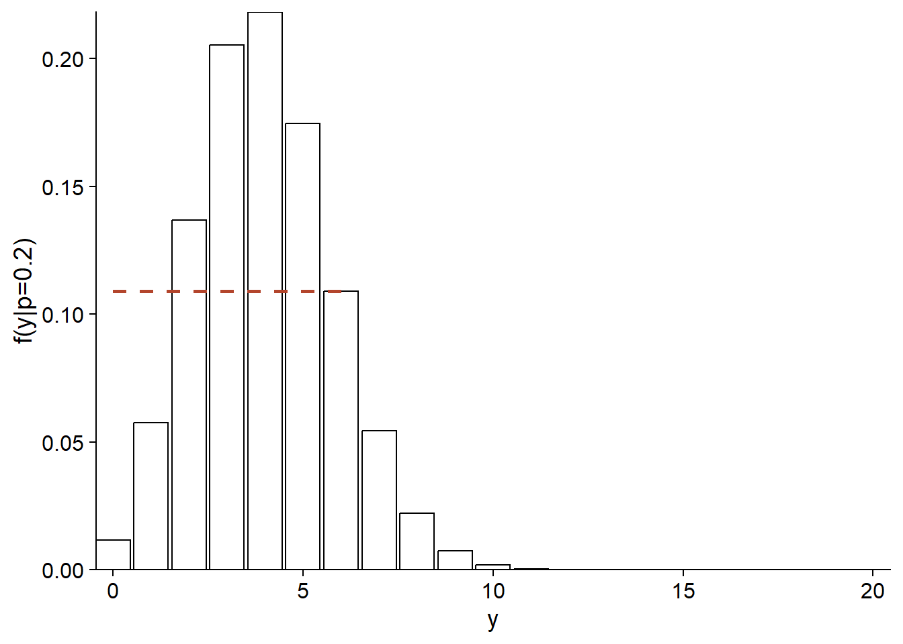
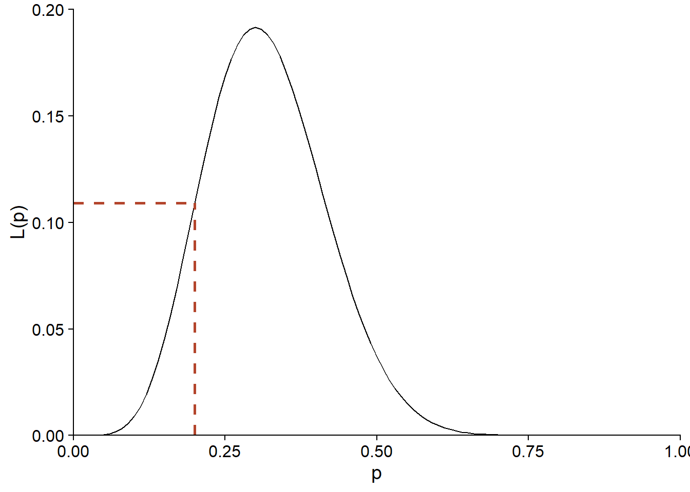
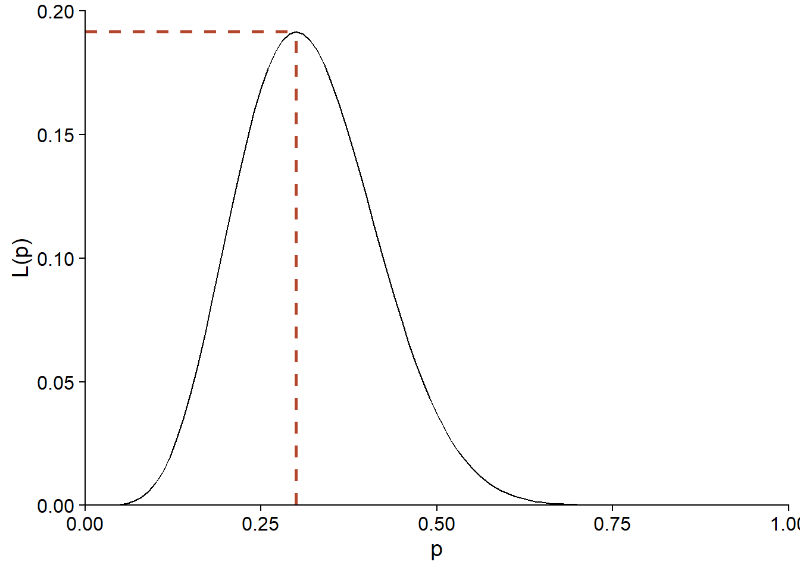
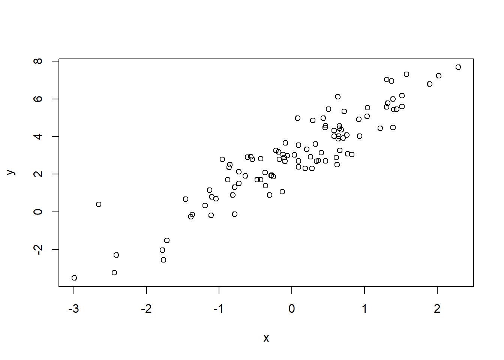
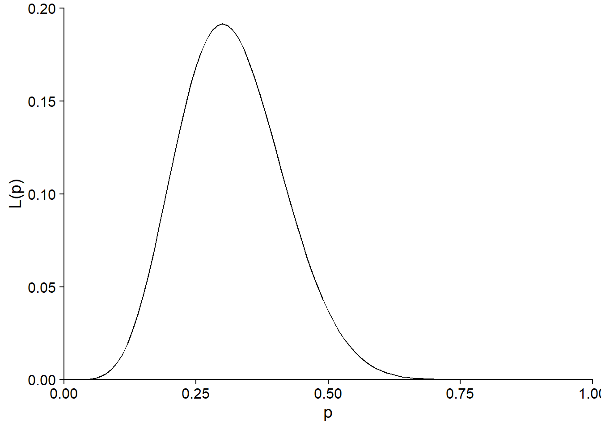
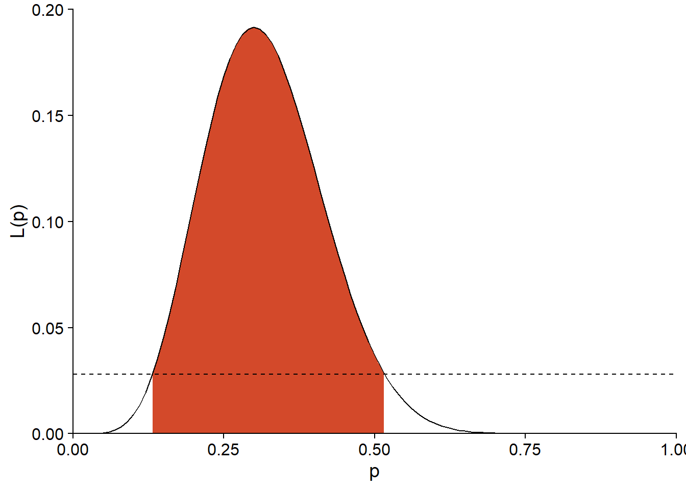
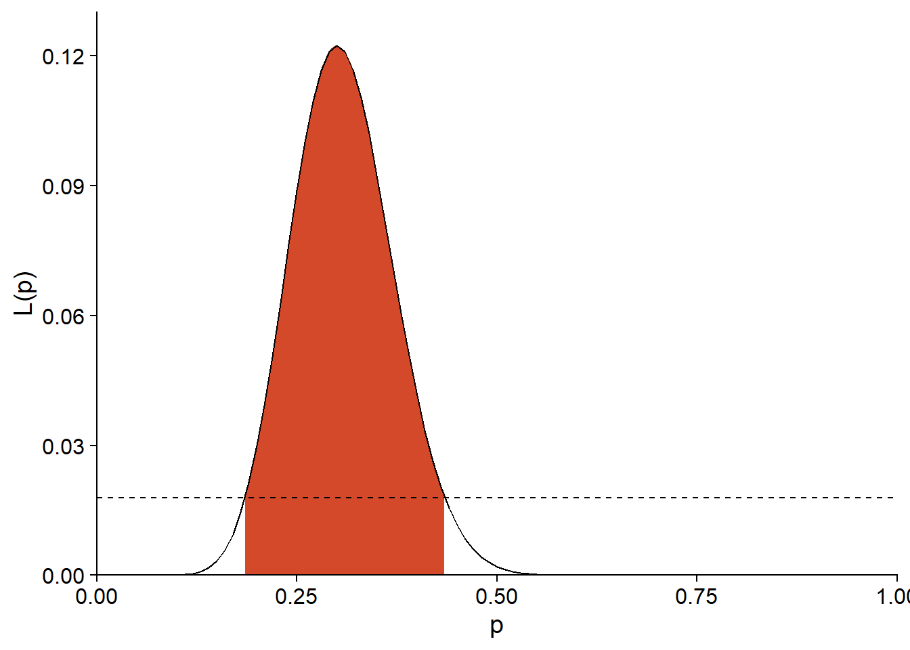
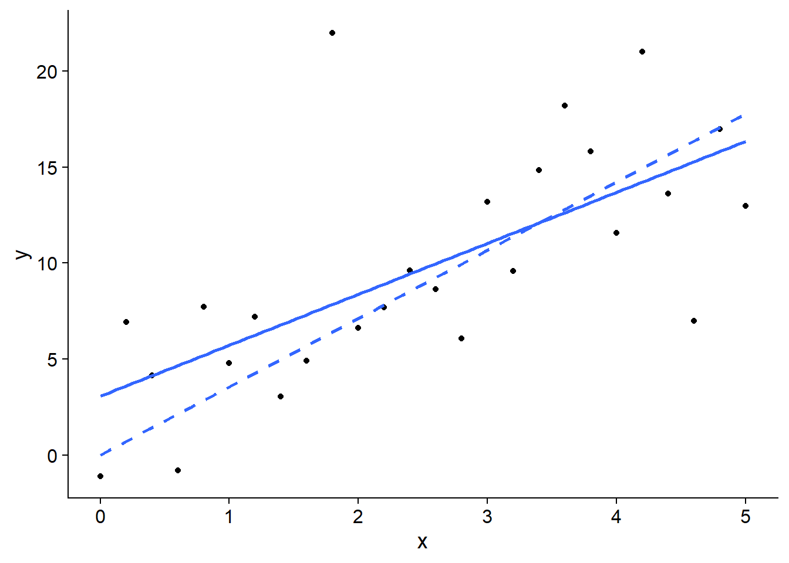
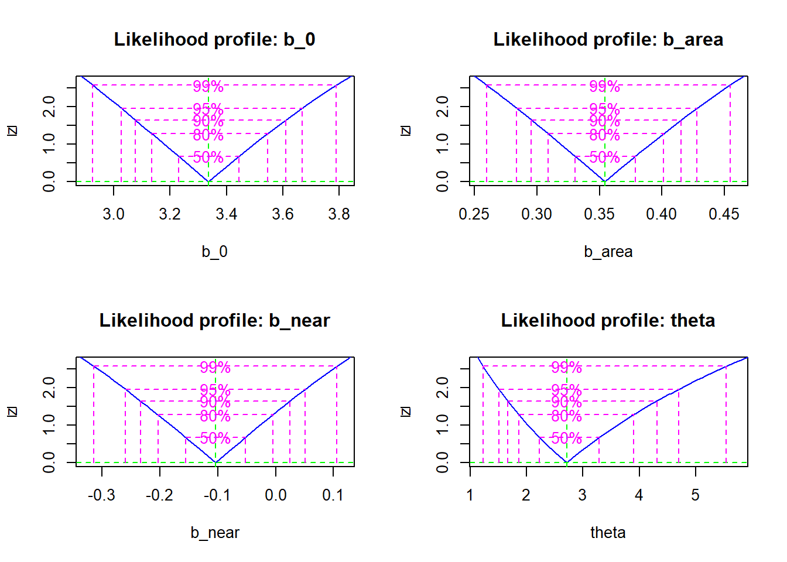

Maximum Likelihood is a general method for estimating the parameters of a statistical model. The parameters of a statistical model define the structure of the model and are estimated from the observed (or available) data during the model fitting process.
The model’s structure is the specific functional form assumed for the data distribution. The functional form of a model is the mathematical expression representing how variables are combined to describe the underlying relationship between them. Thus, the functional form depends on the nature of the involved variables (count, continuous data, categories, etc.) and their relationships. The goal of a parametric model is to fit a distribution to your data that can generalize the relationship between your variables to all cases similar to your case study.
Suppose we have a series of observations of a random variable \(y\) and a potential statistical model for this variable. This model may include the dependence of \(y\) on other predictor variables, as well as a statistical distribution for the unexplained portion of the variation in \(y\). In general, such a model contains various unknown parameters that need to be adjusted to the observed data.
According to Maximum Likelihood, the best estimates of a model’s parameters are those that maximize the probability of the observed values of the variable. This method can be applied regardless of the mathematical form of the model, allowing us to choose models most compatible with our understanding of natural processes, without being limited by models already implemented in statistical software (The Bayesian methods we will see later in the course also have this versatility).
If the general Maximum Likelihood method has not been presented in the preceding course (ECL7102), some of the methods covered in this course were based on this principle:
Model selection using AIC is based on the likelihood function.
Parameter estimation for generalized linear models is done by maximizing likelihood.
Parameter estimation for mixed-effects linear models uses a modified version of Maximum Likelihood (Restricted Maximum Likelihood or REML).
Principle of Maximum Likelihood
Application of Maximum Likelihood in R
Likelihood Ratio Test
Calculation of Confidence Intervals
Estimation of Multiple Parameters: Profile Likelihood and Linear Approximation - Estimation de plusieurs paramètres: vraisemblance profilée et approximation linéaire
Likelihood is a measure of the consistency between the observed data and the possible values of a model’s parameters. Likelihood is thus a measure of the probability that the observed data will occur given the estimated parameters.
Suppose we want to estimate the germination rate of a batch of seeds by germinating 20 of these seeds under the same conditions. If the variable \(y\) represents the number of seeds that successfully germinated for one realization of the experiment, then \(y\) follows a binomial distribution:
\[f(y \vert p) = {n \choose y} p^y (1-p)^{n-y} \]
where the number of trials \(n = 20\), \(p\) is the germination probability for the population, and \({n \choose y}\) represents the number of ways to choose \(y\) individuals out of \(n\). We write \(f(y \vert p)\) to specify that this distribution of \(y\) is conditional on a certain value of \(p\).
Note: In the binomial distribution, Y represents the number of successes in a fixed number of independent trials, each with a success probability P. If we want to examine the distribution of Y under the assumption that P has a specific value, we can express this as a distribution conditional on the value of P that we have established.
For example, here is the distribution of \(y\) if \(p = 0.2\). The probability of obtaining \(y = 6\) in this case is approximately 0.11 (dotted line on the graph).
ggplot(data.frame(x = 0:20), aes(x)) +
labs(x = "y", y = "f(y|p=0.2)") +
stat_function(fun = dbinom, n = 21, args = list(size = 20, prob = 0.2),
geom = "bar", color = "black", fill = "white") +
geom_segment(aes(x = 0, xend = 6, y = dbinom(6, 20, 0.2),
yend = dbinom(6, 20, 0.2)),
color = "#b3452c", linetype = "dashed", size = 1) +
scale_x_continuous(expand = c(0, 0)) +
scale_y_continuous(expand = c(0, 0))## Warning: Using `size` aesthetic for lines was deprecated in ggplot2 3.4.0.
## ℹ Please use `linewidth` instead.
## This warning is displayed once every 8 hours.
## Call `lifecycle::last_lifecycle_warnings()` to see where this warning was
## generated.
If we have observed \(y = 6\), but we do not know the value of \(p\), the same equation allows us to calculate the probability of obtaining this \(y\) for each possible value of \(p\). Viewed as a function of \(p\), rather than \(y\), this same equation corresponds to the likelihood function (denoted \(L\)) of \(p\).
\[L(p) = f(y \vert p) = {n \choose y} p^y (1-p)^{n-y}\]
Here is the form of \(L(p)\) for \(y = 6\) and \(n = 20\):
ggplot(NULL) +
labs(x = "p", y = "L(p)") +
stat_function(fun = function(x) dbinom(6, 20, prob = x),
geom = "density") +
geom_segment(aes(x = 0, xend = 0.2, y = dbinom(6, 20, 0.2),
yend = dbinom(6, 20, 0.2)),
color = "#b3452c", linetype = "dashed", size = 1) +
geom_segment(aes(x = 0.2, xend = 0.2, y = 0, yend = dbinom(6, 20, 0.2)),
color = "#b3452c", linetype = "dashed", size = 1) +
scale_x_continuous(limits = c(0, 1), expand = c(0, 0)) +
scale_y_continuous(limits = c(0, 0.2), expand = c(0, 0))
The likelihood of \(p = 0.2\) for this observation of \(y\) is therefore also 0.11. Note that \(f(y \vert p)\) was a discrete distribution, but since \(p\) is a continuous parameter, the likelihood \(L(p)\) is defined for all real values between 0 and 1.
In a more general context, let’s assume that \(y = (y_1, y_2, ..., y_n)\) is a vector of observations, and \(\theta = (\theta_1, ..., \theta_m)\) is a vector of adjustable parameters of the proposed model to explain these observations. In this case, the likelihood of a specific vector of values for \(\theta\) corresponds to the joint probability of the observations of \(y\), conditioned on these values of \(\theta\). We will see a specific example of calculating \(L\) for a multi-parameter model (normal distribution) in the next section.
\[L(\theta) = p(y | \theta)\] Note: Even though the value of \(L(\theta)\) for a given \(\theta\) corresponds to a probability, the likelihood function is not a probability distribution because, in the theory presented here, \(\theta\) is not a random variable. Also, the integral of a likelihood function (area under the curve of \(L(\theta)\) vs. \(\theta\)) is not always equal to 1, unlike that of a probability density.
The maximum likelihood method is an parameter estimation approach aiming to find values that maximize the likelihood of observed data based on specific parameters of a statistical model. In other words, it seeks to minimize the differences between the observed or available data and the modeled data using a certain combination of parameters.
According to the maximum likelihood principle, the best estimate of the model parameters based on our observations \(y\) is the vector of values \(\theta\) that maximizes the value of \(L(\theta)\).
Here is a binomial distribution: \[y \sim Binomial(n,p)\] It is a distribution defined by two parameters, n, the number of trials, and p, the probability of success. The maximum likelihood method helps us calculate the success proportion in the population \(\hat{p}\) based on the observed or available data, representing our sample.
The estimate of \(\hat{p}\) according to maximum likelihood is given by:
\[\hat{p} = \frac{y}{n}\] Note: The calculation demonstration is presented in Bolker’s referenced book chapter.
The proportion of success in the sample \(\hat{p}\) is the best estimate of the probability of success \(p\) in the population.
If \(\hat{p}\) represents a point estimate of the proportion of success in the population, it is possible to construct a confidence interval around \(\hat{p}\) in which we can be confident that the true value of p lies. The confidence interval is given by the function \(L(p)\). This function depends on \(\hat{p}\), the critical value associated with the chosen confidence level \(z\), and the sample size \(n\).
The value of p that directly maximizes the likelihood function is obtained through optimization algorithms; however, if you simulate a sample from the following binomial distribution data, you can detect this value in the graph.
So, we start by simulating a binomial distribution, and we need two parameters for this: 1) \(y\): the number of successes we want to evaluate. 2) \(n\): the sample size for different success probability values.
Using the stat_function function from the ggplot2 package, it is possible to plot a probability density function for the binomial distribution with the chosen parameters. The probability density function is the function that assigns a relative probability to each possible value of a continuous random variable.
Our binomial function can be defined in advance. If \(y = 6\) and \(n = 20\), then:
binom_density <- function(x) dbinom(6, size = 20, prob = x)The argument prob = x specifies that we want to evaluate the probability for different values of the success probability represented by the variable x.
By visualizing the graph obtained with ggplot, we can observe that the maximum of \(L(p)\) is achieved for \(p = 0.3\).
ggplot(NULL) +
labs(x = "p", y = "L(p)") +
stat_function(fun = binom_density,
geom = "density") +
geom_segment(aes(x = 0, xend = 0.3, y = dbinom(6, 20, 0.3),
yend = dbinom(6, 20, 0.3)),
color = "#b3452c", linetype = "dashed", size = 1) +
geom_segment(aes(x = 0.3, xend = 0.3, y = 0, yend = dbinom(6, 20, 0.3)),
color = "#b3452c", linetype = "dashed", size = 1) +
scale_x_continuous(limits = c(0, 1), expand = c(0, 0)) +
scale_y_continuous(limits = c(0, 0.2), expand = c(0, 0))
In the simple linear regression model, the response variable \(y\) follows a normal distribution, with a mean linearly dependent on the predictor \(x\) and a constant standard deviation \(\sigma\):
\[y \sim N(\beta_0 + \beta_1 x, \sigma)\]
This model has three parameters to estimate: 1) the intercept \(\beta_0\), 2) the slope \(\beta_1\), and 3) the error term \(\sigma\). The error term is the difference between the observed value of \(y\) and the value predicted by the model. In other words, it represents the variance not explained by the independent variables.
Similar to the binomial distribution, it is possible to calculate the probability density of an observation of \(y\) with a suitable formula. In this case, we are not estimating the proportion of success in the sample (\(\hat{p}\)) as before, but rather the probability density of the random variable \(y\), given by the formula:
\[f(y \vert \beta_0, \beta_1, \sigma) = \frac{1}{\sigma \sqrt{2 \pi}} e^{-\frac{1}{2} \left( \frac{y - \beta_0 - \beta_1 x}{\sigma} \right)^2}\]
The likelihood function for the entire dataset is the product of probability densities for all observations. If we have \(n\) independent observations of \(y\) (each with the value of the predictor \(x\)), their joint probability density is given by the product (denoted \(\Pi\)) of individual probability densities. As a function of the parameters, the following equation gives the joint likelihood of \(\beta_0\), \(\beta_1\), and \(\sigma\):
\[L(\beta_0, \beta_1, \sigma) = f(y_1, ..., y_n \vert \beta_0, \beta_1, \sigma) = \prod_{i=1}^n \frac{1}{\sigma \sqrt{2 \pi}} e^{-\frac{1}{2} \left( \frac{y_i - \beta_0 - \beta_1 x_i}{\sigma} \right)^2}\] The goal is to find the values of \(\beta_0\), \(\beta_1\), and \(\sigma\) that maximize this likelihood function. However, it is often easier to calculate the log-likelihood, denoted as \(l = \log L\). Since the logarithm is a monotone function – meaning if \(L\) increases, \(\log L\) also increases – the parameter values that maximize \(l\) will also maximize \(L\).
As the logarithm transforms a product into a sum, after grouping constant terms, the log-likelihood for the linear regression problem above corresponds to:
\[l(\beta_0, \beta_1, \sigma) = n \log \left( \frac{1}{\sigma \sqrt{2 \pi}} \right) - \frac{1}{2 \sigma^2} \sum_{i=1}^n \left( y_i - \beta_0 - \beta_1 x_i \right)^2\] From this point, the process to estimate the parameters at maximum likelihood involves calculating the partial derivatives of the log-likelihood with respect to each parameter. By setting these derivatives to zero and solving, we find the parameter estimates. Checking for concavity ensures that these estimates are global maxima. Finally, estimating uncertainty is done by calculating the variance of the estimates, providing an assessment of their precision.
If we want to see how this could work in R, we can start by generating an independent variable \(x\) from a normal distribution, then a dependent variable \(y\) that uses a linear model to simulate a linear relationship between \(y\) and \(x\). For this, \(y\) is given by two coefficients (intercept and slope) plus the error term, which follows a normal distribution.
set.seed(42)
x <- rnorm(100)
y <- 3 + 2 * x + rnorm(100, mean = 0, sd = 1) #intercept =3 ; pente = 2; erreur = distribution normale
datareg<-data.frame(x,y)
plot(x,y)
Next, we create a function called log_likelihood that takes two arguments: parameters (a vector containing the model parameters) and data (the observed data).
Definition of the log-likelihood function:
x <- rnorm(100)
y <- 3 + 2 * x + rnorm(100, mean = 0, sd = 1)
datareg <- data.frame(x, y)
norm_nll <- function(y_o, x_c, sigma) {
mu <- y_o + x_c * datareg$x
-sum(dnorm(datareg$y, mu, sigma, log = TRUE))
}
# Estimate parameters by maximizing the log-likelihood with mle2 from the bbmle package
mle_norm <- mle(norm_nll, start = list(y_o = 1, x_c = 0, sigma = 1))
mle_norm##
## Call:
## mle(minuslogl = norm_nll, start = list(y_o = 1, x_c = 0, sigma = 1))
##
## Coefficients:
## y_o x_c sigma
## 3.0324929 1.9604096 0.8708721lm(y ~ x, datareg)##
## Call:
## lm(formula = y ~ x, data = datareg)
##
## Coefficients:
## (Intercept) x
## 3.033 1.960Here, having equivalent parameter estimates in the case of Ordinary Least Squares (OLS) and Maximum Likelihood Estimation (MLE) depends on the assumption in linear regression that the model errors are assumed to follow a normal distribution.
The file galapagos.csv contains a dataset on the species richness of plants on 30 islands in the Galapagos Archipelago (Source: Johnson, M.P. et Raven, P.H. 1973. Species number and endemism: The Galapagos Archipelago revisited. Science 179: 893–895.)
galap <- read.csv("../donnees/galapagos.csv")
str(galap)## 'data.frame': 30 obs. of 8 variables:
## $ Name : chr "Baltra" "Bartolome" "Caldwell" "Champion" ...
## $ Species : int 58 31 3 25 2 18 24 10 8 2 ...
## $ Endemics : int 23 21 3 9 1 11 0 7 4 2 ...
## $ Area : num 25.09 1.24 0.21 0.1 0.05 ...
## $ Elevation: int 346 109 114 46 77 119 93 168 71 112 ...
## $ Nearest : num 0.6 0.6 2.8 1.9 1.9 8 6 34.1 0.4 2.6 ...
## $ Scruz : num 0.6 26.3 58.7 47.4 1.9 ...
## $ Adjacent : num 1.84 572.33 0.78 0.18 903.82 ...We will model these data with a negative binomial distribution. This distribution is suitable for representing count data with variance greater than that predicted by the Poisson distribution.
If a variable \(y\) follows a Poisson distribution, then its mean and variance are both given by the same parameter \(\lambda\).
\[y \sim \textrm{Pois}(\lambda)\]
The negative binomial distribution has two parameters, providing greater flexibility than the Poisson distribution because it allows for variation in the number of trials needed to achieve a specified number of successes.
In a negative binomial distribution, the variance is generally greater than the mean, allowing for greater dispersion..
\[y \sim \textrm{NB}(\mu, \theta)\]
In this model, \(y\) has a mean of \(\mu\) and a variance of \(\theta\).
\(\mu\) represents the mean of the distribution, i.e., the average number of trials needed to achieve the specified number of successes.
\(\theta\) is the dispersion parameter that influences the variability of the distribution and determines, along with the mean, the success probability \(p\), according to the formula:
\[p= \frac{\theta}{\mu +\theta}\]
Adjusting \(\theta\) allows for better modeling of situations where data variability is significant, which may be the case in modeling count data.
The parameter \(\theta\) is always positive. A small value of \(\theta\) represents a more variable distribution, while if \(\theta\) is very high, the second term is negligible, and the distribution tends toward that of Poisson.
Similar to Poisson regression, the negative binomial model uses a logarithmic link to connect \(\mu\) to a linear function of predictors.
\[\log\mu = \beta_0 + \beta_1 x_1 + \beta_2 x_2 + ...\]
For this example, we will fit the model of the number of species (Species) based on the island’s area (Area, in km\(^2\)) and the distance to the nearest island (Nearest, in km). We also take the logarithm of each predictor.
Most models do not allow for analytical derivation of the maximum likelihood position. In such cases, we resort to optimization algorithms that numerically estimate the maximum value of the (log-)likelihood function and the value of each parameter corresponding to this maximum.
In R, the optim function is a general tool for determining the minimum or maximum of a given function. However, there are also functions specialized for maximum likelihood estimation problems. In this course, we will use the mle2 function from the bbmle package.
First, we need to write a function that calculates the negative log-likelihood for our problem. By convention, optimization algorithms require a function to minimize. Therefore, instead of maximizing the log-likelihood, we minimize its negation.
nll_galap <- function(b_0, b_area, b_near, theta) {
mu_sp <- exp(b_0 + b_area * log(galap$Area) + b_near * log(galap$Nearest))
-sum(dnbinom(galap$Species, mu = mu_sp, size = theta, log = TRUE))
}The nll_galap function above accepts four parameters corresponding to the three coefficients of the linear predictor needed to calculate \(\mu\) and the \(\theta\) parameter of the negative binomial distribution.
The first line of the function calculates the linear predictor and takes its exponential to obtain the average number of species mu_sp. Reminder: In R, most mathematical operations are performed element-wise on vectors. Thus, mu_sp contains 30 values, the first calculated from the predictor values for island 1, the second for the values of island 2, and so on.
The second line calculates the log-likelihood of each observation according to the binomial model with dnbinom (also element-wise), then sums them up and takes the negation.
Note that we specify log = TRUE in dnbinom to calculate the logarithm of the likelihood. As seen before, the log-likelihood of a set of observations is equal to the sum of their individual log-likelihoods when the observations are independent.
Finally, we load the bbmle package and call the mle2 function. The first argument of this function is our function calculating the negation of the log-likelihood. We also need to specify for the start argument a list of initial values for each parameter that the algorithm will use to start the search for the maximum.
The exact choice of initial values is not critical in most cases, but it is recommended to provide plausible values (not too extreme) for the parameters. Therefore, we choose a null value for each coefficient but a positive value for \(\theta\), which must be greater than zero.
library(bbmle)
mle_galap <- mle2(nll_galap, start = list(b_0 = 0, b_area = 0, b_near = 0, theta = 1))
mle_galap##
## Call:
## mle2(minuslogl = nll_galap, start = list(b_0 = 0, b_area = 0,
## b_near = 0, theta = 1))
##
## Coefficients:
## b_0 b_area b_near theta
## 3.3352151 0.3544290 -0.1042696 2.7144722
##
## Log-likelihood: -137.98The execution of the function produces several warnings (## Warning in dnbinom(galap$Species, mu = mu_sp, size = theta, log = TRUE):## Production of NaN) in R, which are not shown here. These warnings likely result from cases where the algorithm attempts to assign a negative value to theta and generates an error. In such cases, it simply tries a new value.
Note that the maximum of the log-likelihood in the above result is equal to -137.98, which corresponds to a very small likelihood value:
exp(-137.98)## [1] 1.191372e-60Likelihood corresponds to the probability of obtaining exactly the values that appear in the dataset according to the model. Considering the numerous possible values for an observation of the variable and the fact that these possibilities multiply for each subsequent observation, it is not surprising that this probability is very low, especially for a large sample.
The absolute value of likelihood is not easily interpretable. Instead, its relative value allows for comparing the fit of different parameter values applied to the same observed data.
Nevertheless, working with numbers extremely close to zero can be challenging; that’s one of the reasons why the logarithm of likelihood is used in practice.
For our example, we could have used the glm.nb function from the MASS package, specifically designed to estimate parameters for a negative binomial regression. By fitting our model with this function, we can verify that the results align with the application of mle2.
library(MASS)
glm.nb(Species ~ log(Area) + log(Nearest), galap)##
## Call: glm.nb(formula = Species ~ log(Area) + log(Nearest), data = galap,
## init.theta = 2.714482206, link = log)
##
## Coefficients:
## (Intercept) log(Area) log(Nearest)
## 3.3352 0.3544 -0.1043
##
## Degrees of Freedom: 29 Total (i.e. Null); 27 Residual
## Null Deviance: 138.7
## Residual Deviance: 32.7 AIC: 284The functions available in R and various packages already cover a good number of common models, including linear models, generalized linear models, mixed models, and others. Moreover, several non-linear models can be linearized with an appropriate transformation. For example, a power-law relationship between the number of species \(S\) and habitat area \(A\):
\[S = cA^z\]
This can be transformed into a linear relationship by taking the logarithm on each side:
\[\log(S) = \log(c) + z \log(A)\]
When a specialized function is available to estimate the parameters of a model, it is simpler to use it rather than coding the model oneself and applying maximum likelihood.
However, there are cases where the assumed model for the data does not fit into a standard format. Here are some examples in forest ecology.
Ajustement d’une courbe de dispersion (ex.: Clark et al. 1999)
Une façon d’estimer la capacité de dispersion d’une espèce de plantes est d’échantillonner les graines tombant dans des pièges placés à différentes distances de plantes mères. En particulier, on s’intéresse à estimer la courbe de dispersion \(f(r)\) qui correspond à la probabilité qu’une graine tombe à une distance \(r\) de son point d’origine.
Supposons que \(y\) représente le nombre de graines dans un des pièges et peut être représenté par une distribution binomiale négative.
\[y_i \sim \textrm{NB}(\mu_i, \theta)\]
Le nombre de graines moyen dans le piège \(i\), \(\mu_i\), correspond à la somme des contributions de chaque plante mère \(j\) située à proximité; cette contribution est égale au nombre de graines produites par une plante mère (\(b\), que nous supposons fixe) multiplié par la courbe de dispersion évaluée pour la distance \(r_{ij}\) entre le piège \(i\) et la plante \(j\).
\[y_i \sim \textrm{NB}(\sum_j b\times f(r_{ij}), \theta)\]
Puisque \(f\) est une fonction
non-linéaire avec ses propres paramètres à ajuster, puis que la moyenne
de \(y\) contient la somme de valeurs
de \(f\) évaluées à différentes
distances, il est nécessaire de créer sa propre fonction de
vraisemblance et la maximiser avec un outil comme mle2.
Fitting a dispersion curve (ex.: Canham et al. 2004)
The growth of trees in a forest can be reduced by competition from neighboring trees. If we assume that the competition exerted on tree \(i\) by neighbor \(j\) increases with the diameter \(D_j\) of that neighbor and decreases with the distance \(r_{ij}\) between the two trees, we can define a competition index (CI) that sums the effects of each neighbor on \(i\):
\[CI_i = \sum_j \frac{D_j^{\delta}}{r_{ij}^{\gamma}}\]
We want to estimate the powers \(\delta\) and \(\gamma\) appearing in the index from the data. Suppose we have a linear model for the growth \(y_i\) of tree $i,” where we add a term dependent on this index:
\[y_i = \beta_0 + ... + \beta_{CI} \sum_j \frac{D_j^{\delta}}{r_{ij}^{\gamma}}\]
There is no way to simplify this last term, so the maximum likelihood can be useful for estimating the coefficients (all \(\beta\), \(\gamma\), and \(\delta\)) of this now non-linear model.
Most advantageous properties of maximum likelihood estimates, including lack of bias, hold true in the limit where the sample size is large. What constitutes a sufficiently large sample depends on the model and particularly the number of parameters to estimate.
In practice, maximum likelihood is obtained through a numerical algorithm searching for the maximum through an iterative process. A complex likelihood function could have multiple local maxima (points where the function is maximized concerning values close to the parameters), in which case it is not guaranteed that the algorithm finds the global maximum (the one with the highest likelihood).
It is possible to use the likelihood function to test a hypothesis about the value of a parameter.
For example, consider the likelihood function calculated at the beginning of the course to estimate the germination probability of a batch of seeds if 6 seeds germinated out of 20 trials.
ggplot(NULL) +
labs(x = "p", y = "L(p)") +
stat_function(fun = function(x) dbinom(6, 20, prob = x),
geom = "density") +
scale_x_continuous(limits = c(0, 1), expand = c(0, 0)) +
scale_y_continuous(limits = c(0, 0.2), expand = c(0, 0))
In this case, the maximum likelihood estimate is \(\hat{p} = 0.3\). Suppose the seed provider claims that their germination rate is 50%. Is the result of the experiment compatible with this value?
The likelihood corresponding to the null hypothesis (\(p_0 = 0.5\)) is approximately \(L(p_0) = 0.037\), compared to a maximum of \(L(\hat{p}) = 0.192\).
l_0 <- dbinom(6, 20, prob = 0.5)
l_max <- dbinom(6, 20, prob = 0.3)
c(l_0, l_max)## [1] 0.03696442 0.19163898The ratio between these two values of \(L\) is used to define a statistic for the likelihood ratio test. This statistic corresponds to -2 times the logarithm of the ratio between the likelihood of the parameter under the null hypothesis and the maximum likelihood estimate.
\[- 2 \log \left( \frac{L(\theta_0)}{L(\hat{\theta})} \right)\]
Equivalently, the ratio can be replaced by the difference of log-likelihoods:
\[- 2 \left( l(\theta_0) - l(\hat{\theta}) \right)\]
The factor of -2 was chosen so that, if the null hypothesis is true and the sample size is large enough, the distribution of this statistic approaches the \(\chi^2\) distribution with 1 degree of freedom. In our example, the likelihood ratio statistic is equal to 3.29.
rv <- -2*log(l_0 / l_max)
rv## [1] 3.291315The probability of obtaining a ratio greater than or equal to this, if the null hypothesis \(p = 0.5\) is true, can be approximated using the cumulative distribution of the \(\chi^2\).
1 - pchisq(rv, df = 1)## [1] 0.06964722Note: The likelihood-ratio test does not apply if the null hypothesis is at the limit of possible values for a parameter. For example, for the parameter \(p\) of a binomial distribution, we cannot use this test for the null hypothesis \(p_0 = 0\) or \(p_0 = 1\).
The likelihood-ratio test is also used to compare two models. In this case, the models must be nested, meaning that the simpler model contains a subset of the parameters of the more complex model. For example, consider a linear regression model with 1 predictor (M1) and a second model with 3 predictors (M2).
In this case, M1 can be seen as a version of M2 where \(\beta_2\) and \(\beta_3\) are set to 0. If M1 is the true model for the data, the likelihood-ratio statistic between the two models approximately follows a \(\chi^2\) distribution, with degrees of freedom equal to the difference in the number of estimated parameters between the two models (here, 2).
\[- 2 \left( l_{M1} - l_{M2} \right) \sim \chi^2(2)\]
In the course ECL7102, we studied model comparison using the Akaike Information Criterion (AIC):
\[AIC = - 2 \log L + 2K = -2l + 2K\]
In this formula, \(K\) is the number of adjustable parameters in the model. We also saw a correction to the AIC (AICc) for “small” samples (when \(N/K\) < 30, where \(N\) is the sample size).
The AIC has a broader scope than the likelihood-ratio test since it allows the comparison of more than two models, whether nested or not. When both methods apply, their goals are different:
AIC aims to identify the model that best predicts the response for a new sample from the same population;
The likelihood-ratio test indicates whether the observed difference between the fit of the simplest model and the most complex model is compatible with the hypothesis that the simplest model is correct.
If \(\hat{\theta}\) is the maximum likelihood estimate for a parameter \(\theta\), we can obtain a confidence interval for this parameter using the relationship between hypothesis testing and confidence interval:
If we cannot reject the null hypothesis \(\theta = \theta_0\) at a significance level \(\alpha\), then \(\theta_0\) is part of the \(100(1-\alpha)%\) confidence interval for \(\theta\).
For example, the 95% confidence interval bounds are the values of \(\theta\) where the likelihood-ratio statistic is equal to the 95th percentile of the \(\chi^2\) distribution; it is the maximum value of the statistic that is not rejected at a significance level \(\alpha = 0.05\).
\[- 2 \left( l(\theta_0) - l(\hat{\theta}) \right) = \chi^2_{0.95}(1)\]
Reminder: The \(\chi^2\) test is one-sided, as only high values of the statistic indicate a significant deviation from the null hypothesis.
By isolating \(\theta_0\) in the equation, we get:
\[l(\theta_0) = l(\hat{\theta}) - \frac{\chi^2_{0.95}(1)}{2}\]
Thus, we need to determine the values of \(\theta\) for which the log-likelihood is approximately 1.92 lower than the maximum.
qchisq(0.95, df = 1) / 2## [1] 1.920729For our seed germination example (\(\hat{p} = 0.3\)), the 95% confidence interval bounds correspond to \(L = 0.0281\).
exp(dbinom(6, 20, 0.3, log = TRUE) - qchisq(0.95, df = 1)/2)## [1] 0.02807512This threshold is represented by the dashed line on the graph below and corresponds to an approximate interval of (0.132, 0.516) for \(p\).
ggplot(NULL) +
labs(x = "p", y = "L(p)") +
stat_function(geom = "area", fill = "#d3492a", n = 1000,
fun = function(x) ifelse(x > 0.132 & x < 0.516,
dbinom(6, 20, prob = x), NA)) +
stat_function(fun = function(x) dbinom(6, 20, prob = x),
geom = "density") +
geom_hline(yintercept = 0.0279, linetype = "dashed") +
scale_x_continuous(limits = c(0, 1), expand = c(0, 0)) +
scale_y_continuous(limits = c(0, 0.2), expand = c(0, 0))
For an experiment with the same estimate of \(\hat{p}\) but a larger sample size \((n = 50, y = 15)\), the limit of \(L\) for the 95% interval is 0.0179.
exp(dbinom(15, 50, 0.3, log = TRUE) - qchisq(0.95, df = 1)/2)## [1] 0.01792382As seen below, the likelihood function and, consequently, the confidence interval are narrower.
ggplot(NULL) +
labs(x = "p", y = "L(p)") +
stat_function(geom = "area", fill = "#d3492a", n = 1000,
fun = function(x) ifelse(x > 0.185 & x < 0.435,
dbinom(15, 50, prob = x), NA)) +
stat_function(fun = function(x) dbinom(15, 50, prob = x),
geom = "density") +
geom_hline(yintercept = 0.0179, linetype = "dashed") +
scale_x_continuous(limits = c(0, 1), expand = c(0, 0)) +
scale_y_continuous(breaks = seq(0, 0.12, 0.03),
limits = c(0, 0.13), expand = c(0, 0))
If \(m\) parameters are estimated simultaneously, the likelihood function is not a curve but rather an \(m\)-dimensional surface. When calculating the likelihood ratio \(-2 \left( l(\theta_{0}) - l(\hat{\theta}) \right)\) for different values of \(\theta_{0}\) for one of the parameters, it is necessary to choose the values for the other \(m - 1\) parameters. A simple solution would be to fix all other parameters at their maximum likelihood estimated values, but this assumes that these estimates are independent. In general, if \(\theta_0\) is fixed to a value other than \(\hat{\theta}\), the estimate maximizing the likelihood may change.
For example, in the illustrated linear regression model below, the best estimate of the slope changes if we fix the intercept at 0 (dashed line).
## `geom_smooth()` using formula = 'y ~ x'
To construct the curve of \(l(\theta_0)\) for different values of the parameter, it is necessary, for each fixed value of \(\theta_0\), to find the maximum likelihood for the remaining parameters. The resulting curve is called the profile likelihood.
The profile function from the bbmle package evaluates the profile likelihood for each parameter based on the result of mle2. Here are the results obtained for the earlier fitted model (negative binomial regression for the number of plant species on the Galapagos Islands).
galap_pro <- profile(mle_galap)
plot(galap_pro)
For each parameter, the graph shows the square root of the likelihood ratio \(\sqrt{- 2 \left( l(\theta_{0}) - l(\hat{\theta}) \right)}\) for the profile likelihood. The square root transformation allows for a quick assessment of whether the profile likelihood is approximately quadratic (see the next section), which would result in a symmetric “V” shape after transformation.
Various confidence intervals are overlaid on the graph; these intervals can also be directly obtained using the confint function.
confint(galap_pro, level = 0.95)## 2.5 % 97.5 %
## b_0 3.0259619 3.66809720
## b_area 0.2837173 0.42822254
## b_near -0.2600032 0.05105544
## theta 1.5113578 4.69693757Since calculating the profile likelihood of a parameter requires repeatedly adjusting the other model parameters, this method can be time-consuming for a complex model.
A more approximate but much faster method is to assume that the log-likelihood follows a quadratic form. With a single parameter, this quadratic form is a parabola centered at the maximum likelihood: \(- 2 \left( l(\theta_{0}) - l(\hat{\theta}) \right) = a (\theta_{0} - \hat{\theta})^2\). Here, the coefficient \(a\) measures the curvature of the parabola. As seen in the binomial example above, the more pronounced this curvature, the more precise the parameter estimate.
In fact, if the quadratic approximation is good, the variance of \(\hat{\theta}\) (and thus the square of its standard error) is the inverse of the second derivative of \(-l\), which measures the curvature at the maximum.
\[\frac{\textrm{d}^2(-l)}{\textrm{d}\theta^2} = \frac{1}{\sigma_{\hat{\theta}}^2}\]
With \(m\) parameters, the curvature in \(m\) dimensions around the maximum is represented by an \(m \times m\) matrix of second partial derivatives of \(-l\), called the Fisher information matrix. By inverting this matrix, we obtain the variances and covariances of the estimates. Assuming that the quadratic approximation is correct, these variances and covariances are sufficient to obtain the desired confidence intervals for each parameter.
In the bbmle package, confidence intervals under the quadratic approximation can be calculated by specifying method = “quad” in the confint function:
confint(mle_galap, level = 0.95, method = "quad")## 2.5 % 97.5 %
## b_0 3.0246480 3.6457823
## b_area 0.2847479 0.4241100
## b_near -0.2536734 0.0451341
## theta 1.1781122 4.2508322Here, it is observed that the estimates are close to those of the profile likelihood, except for \(\theta\). Inspecting the profiles obtained earlier reveals that the profile for \(\theta\) adheres less to the quadratic form.
For a statistical model, likelihood is a function that associates each parameter value with the probability of the observed data, conditioned on that parameterization. According to the maximum likelihood principle, the best estimates of the parameters are those that maximize the likelihood.
To determine the maximum likelihood for a custom model in R, you need to create a function that calculates the log-likelihood based on the parameters and then use an optimization algorithm to find the maximum.
The likelihood ratio test allows testing a hypothesis about the value of a parameter estimated using maximum likelihood, obtaining a confidence interval for this parameter, or comparing two nested models.
To estimate the uncertainty of an estimate in a model with multiple adjustable parameters, we can either calculate the profile likelihood for that parameter or use the quadratic approximation.
-The course content is adapted from the ECL8202 - Complex Data Analysis course given in 2020 by Philippe Marchand, formerly a professor at IRF-UQAT. You can add this information to the reference.Marchand, Philippe (2020). ECL8202 - Complex Data Analysis, available on GitHub at https://github.com/pmarchand1/ECL8202
Bolker, B.M. (2008) Ecological models and data in R. Princeton University Press, Princeton, New Jersey. (Chapitre 6 sur le maximum de vraisemblance)
Canham, C.D., LePage, P.T. et Coates, K.D. (2004) A neighborhood analysis of canopy tree competition: effects of shading versus crowding. Canadian Journal of Forest Research 34: 778–787.
Clark, J.S., Silman, M., Kern, R., Macklin, E. et HilleRisLambers, J. (1999) Seed dispersal near and far: Patterns across temperate and tropical forests. Ecology 80: 1475–1494.